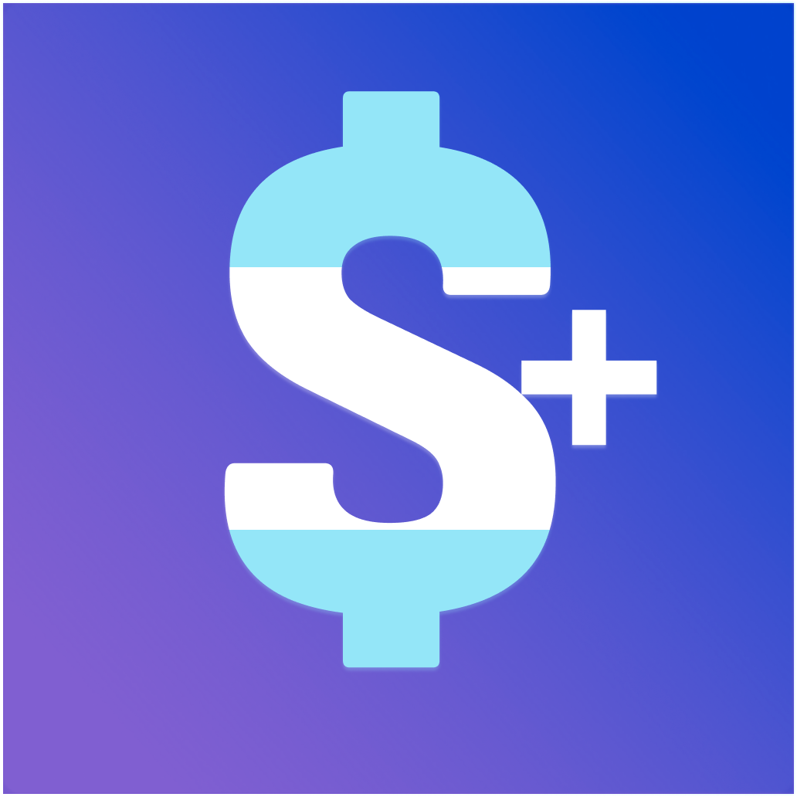

Dolar +
Tipo de cambio en un vistazo, pensado para velocidad y confianza. UI minima, contexto maximo.
Pedir detallesMarca personal
Transformo ideas en experiencias mobile y web con foco en claridad, rendimiento y detalles que hacen que un producto se recuerde.
Destacado
Seguimiento de tipo de cambio en Argentina con una interfaz clara y rapida.
Productos en progreso enfocados en claridad, utilidad y pulido.
Tipo de cambio en un vistazo, pensado para velocidad y confianza. UI minima, contexto maximo.
Pedir detallesHerramientas para practicar, medir progreso y tocar en vivo. Disenado para no estorbar.
Recibir novedadesDecisiones diarias simplificadas. Recomendaciones por clima, agenda y contexto.
Sumarme a la listaLlevo mas de 14 años creando y escalando productos digitales que funcionan en el mundo real. He trabajado con equipos grandes y distribuidos, mejorando experiencias de usuario, optimizando costes tecnicos y consiguiendo que las cosas salgan a tiempo y con sentido.
Me muevo bien entre tecnologia, producto y negocio. Me interesa menos la teoria y mas como tomar buenas decisiones, simplificar lo complejo y convertir ideas en resultados concretos. Trabajo mucho con automatizacion e IA aplicada de forma practica, sin fuegos artificiales.
Disfruto construyendo equipos solidos, ayudando a crecer a otras personas y resolviendo problemas dificiles con calma, criterio y foco en impacto.
Conta tu idea o pedi un walkthrough privado de los proyectos actuales.